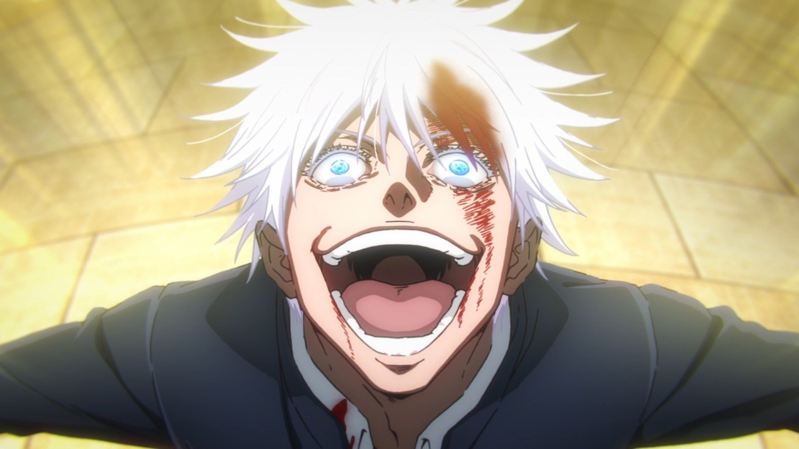

¿Que son las Tecnicas Malditas?
Hace referencia al uso o manipulación de energía maldita a través de una determinada técnica. Las técnicas suelen ser bastantes diversas y tienden a ser exclusivas del usuario o de su familia o clan. La técnica va a depender de su tipo y de las capacidades de su usuario. Asimismo, se requiere la capacidad de poder manipular la energía maldita que nace de las emociones negativas que naturalmente fluye a través del cuerpo. Casi todos los humanos, de alguna u otra forma, son capaces de emitir dicha energía y sólo aquellos que tengan un cierto control sobre la misma, pueden llegar a ejercer como chamanes ya que, de este modo, serán capaces de usarla a voluntad y poder poseer o aprender una técnica maldita.
Existen 5 tipos de Técnicas de Malditas en total, cada una de ellas tienen distintas características que hacen que destaquen, y no todas pueden ser usadas por los mismos chamanes o maldiciones. De esto no se ha hablado mucho en el anime, pero hoy te vamos a explicar cuáles son y quiénes son los personajes capaces de usarlas en los combates. A continuación, puedes encontrar toda la información que necesitas.
Especificaciones
- Las técnicas que tienden a ser heredadas y aquellas que son innatas, suelen manifestarse entre los 4 a 6 años de edad.
- Las técnicas heredadas tienen el beneficio de tener un manual sobre como hacer uso de ellas, ya que se transmiten de generación en generación, pero presenta la desventaja de que la información puede verse filtrada.
- Las técnicas de barreras suelen ser utilizadas por cualquier chamán con el entrenamiento suficiente.
- La Expansión Territorial es considerada una técnica de barrera pero suelen formarse en aquellos que poseen una técnica innata o heredada. Sin embargo, son extremadamente difíciles de desarrollar y la mayoría de los chamanes nunca llegan a poseer un territorio propio.
- La técnica de Emoción de Pétalos Caídos es una barrera utilizada exclusivamente entre aquellos que forman parte de los tres grandes clanes.

Tecnicas Conocidas
Las técnicas suelen ser bastantes diversas y tienden a ser exclusivas del usuario o de su familia o clan. Las técnicas existentes son:
| Tecnica | Descripcion | Conocidos |
|---|---|---|
| Tecnica Innata | Estas son habilidades exclusivas de cada usuario, que solo pueden desarrollarse si la persona nace con la capacidad innata para dominarlas. Dependen tanto de la energía maldita como de las características físicas y mentales del usuario. |
|
| Tecnica Hereditaria | Estas técnicas se transmiten a través de los clanes chamánicos y son exclusivas para aquellos que pertenecen a estas familias. |
|
| Tecnica de Barrera | Son técnicas avanzadas que requieren un alto control de energía maldita para funcionar, y suelen ser usadas por chamanes o maldiciones experimentadas. |
|
| Tecnica de Nuevo Estilo de Sombra | También conocida como la técnica de los "débiles", es comúnmente utilizada por espadachines y guerreros que dependen de armas cuerpo a cuerpo. |
|
| Tecnica de Maldicion Inversa | No es una técnica ofensiva, sino una técnica curativa que implica la manipulación de energía maldita positiva para sanar heridas, incluso regenerar extremidades. |
|
Por ahora, estos son todos los tipos de Técnicas Malditas que existen en el universo de Jujutsu Kaisen, todas tienen ciertos parámetros especiales que hacen que sean útiles en los enfrentamientos.
